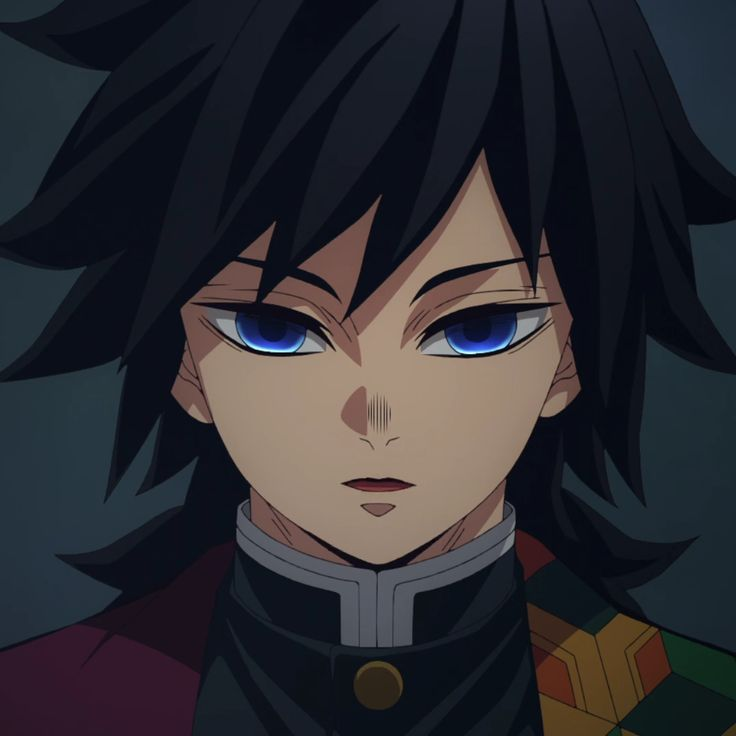
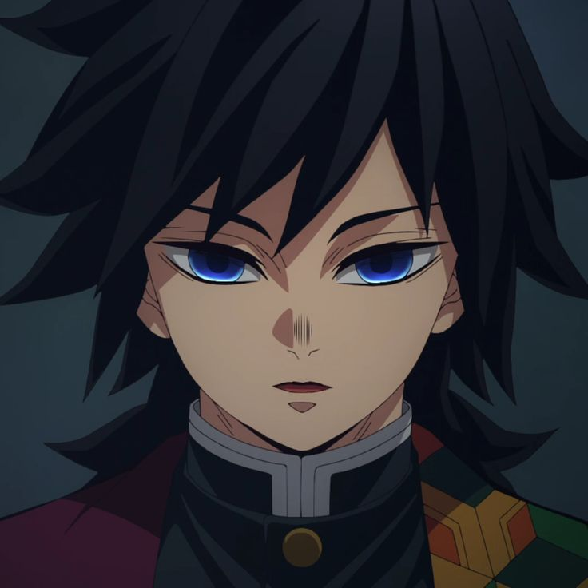

.jpg)


 

PILLARS

Hashira is the highest rank that Demon Slayers can obtain in the Demon Slayer Corps. Those who hold the position are regarded as the most powerful and skilled combatants in the entire organization, protecting humanity against more dangerous threats that cannot be handled by other Demon Slayers.
The Hashira, in accordance with their great strength, hold the highest authority in the organization, second only to the Corps leader, Kagaya Ubuyashiki, and later, Kiriya Ubuyashiki.[1]
The Hashira are all assigned a specific region that they are required to patrol, usually to gather information about the demons inhabiting said area and to improve their swordsmanship. They are also deployed on missions only if lower-ranking members are unable to complete it.
Each Hashira is the master of a unique Breathing Style, some of which are even created by themselves. Interestingly, swordsmen who can use Flame Breathing and Water Breathing have become Hashira in every era, with no exceptions thus far.[2]
Joining
To be a member of the Hashira, a Demon Slayer must be among the strongest combatants in the entirety of the Demon Slayer Corps. There are two known methods (both extremely difficult) that allow one to prove that they are worthy of becoming a Hashira: the first method is to accumulate a demon kill count of at least 50 as a Kinoe-ranked Demon Slayer, or slay a member of the Twelve Kizuki.[3][4] The second method is being a Tsuguko of a Hashira, which requires immense talent. Additionally, Tsuguko can only inherit the rank, if their respective Hashira dies or retires.
The effort required to achieve either of these methods requires almost five years' worth of training, though, the talented might take only two or so years to do so.[3] However, there was one example that was much faster than that; Muichiro Tokito, who managed to rise to the rank of Hashira just two months after joining the Demon Slayer Corps.